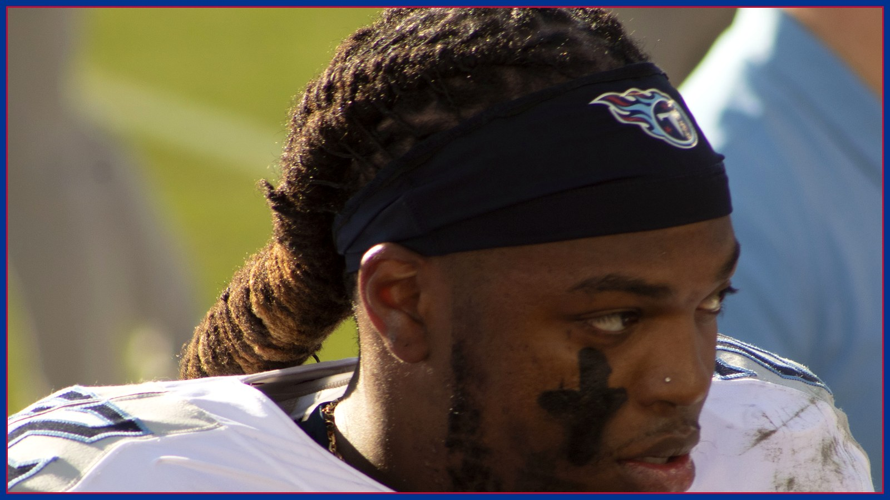

The King Has Hit the Cliff: Derrick Henry by the Numbers
For a decade, Derrick Henry averaged 102 yards a game against Buffalo. The last two weeks: 103 yards total, at 3.02 a carry. Dre breaks down the cliff — and the one big reason to be careful before burying the King.

For ten years, the first name on Buffalo's scouting report when Baltimore — or Tennessee before them — came up on the schedule was the same one: Derrick Henry. And the numbers explain why nobody in Orchard Park ever talked themselves out of worrying about him. In eight career meetings with the Bills, Henry has averaged 102 rushing yards per game and scored 11 touchdowns. Not one good afternoon in there propping up the average. A decade of him, at full speed, being the worst Sunday on Buffalo's calendar.
Now open this season's book, because the King on those pages is somebody else. Over the last two weeks, Henry has rushed for 103 yards — total. Not per game. Total. In two games combined he barely matched what he used to take from Buffalo in one, and he did it at 3.02 yards per carry, a number that belongs to a short-yardage back getting stacked up at the line, not to the most feared power runner of his generation.
Zoom out and the season tells the same story. Henry is averaging 3.9 yards per carry this year. Read that again: for the first time in his 11-year career, Derrick Henry is under 4.0 yards a carry. Eleven seasons of defensive coordinators building entire game plans around keeping him at exactly that number, and this is the first year the number has just... shown up. On film, a sub-4.0 power back season has a look: first contact arriving a half-step sooner, the pile falling backward instead of forward, second-and-9 turning into third-and-long instead of third-and-manageable. The stiff-arm highlights are built on momentum. The momentum is what goes first.
Now the honest part, because Film Room doesn't bury a player on half the evidence. Henry hasn't scored a rushing touchdown in three straight games — and those are exactly, precisely, the three games Lamar Jackson has missed. That's not a coincidence to wave past; it's the context the whole league understands. Without Jackson's legs bending the defense, every safety, every linebacker, every spare set of eyes on the field belongs to Henry. Eleven men get to play one back honestly. His quiet stretch and Lamar's absence are the same three weeks, and any breakdown that ignores that is selling you a funeral the film doesn't support.
Which is what makes Sunday at Highmark — Ravens at Bills, 1 PM ET — the most interesting test of the season for Jim Leonhard's defense. Jackson is expected back. If he plays, Henry gets his shield back: a defense that has to honor the quarterback's legs can't sell out the same way. But the cliff numbers didn't need Lamar's absence to exist — the 3.9 season average was built over the whole year, not three weeks. So Sunday isn't really Henry versus Buffalo. It's two true stories colliding: a back whose decade of dominance is over on the numbers, and a back whose worst month came with an excuse Buffalo won't get to use.
Leonhard's answer, on paper, is the aggressive one: sell out on early downs. Load the box on first and second down, make Henry win against numbers — the thing this season says he no longer does — and dare Baltimore to live in third-and-long, where a returning quarterback has to drop back, set his feet, and throw on schedule. It's the plan everybody claims they'll run against Henry and nobody has survived running for ten years. The difference now is the arithmetic finally backs the coordinator up: at 3.02 a carry over the last two weeks, even an honest box is winning.
One wrinkle Buffalo has to solve without help: Ed Oliver's return is doubtful. Don't let anybody tell you he's back — as of this writing, the middle of Buffalo's defensive front probably has to hold up without its best interior disrupter, against the biggest back of the era, in a game plan built on winning at the line of scrimmage. That's the stress point. Leonhard's sell-out works only if the front wins its gaps without Oliver collapsing the interior by himself — numbers and discipline instead of a star.
Joe Brady's side of it matters too: every long Buffalo drive is a drive Henry watches from the sideline, and a rested defense is the one that tackles a 247-pound back in the fourth quarter. But the headline is the headline. For a decade, this matchup was simple: stop Henry or lose. On Sunday, for the first time in 11 years, the numbers say Henry has to prove he's still the problem. So here's my question for Bills Mafia: is this the week the King finally looks mortal in Buffalo — or does Lamar's return bring him back to life for one more Sunday?